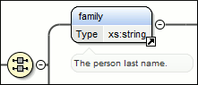
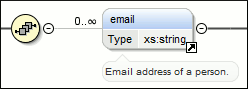

XML Schema Components
A schema diagram contains a series of interconnected components. To quickly identify the
relation between two connected components, the connection is represented as:
-
A thick line to identify a connection with a required component (in the following image,
<family>is a required element).Figure 1. Example: Required Component  -
A thin line to identify a connection with an optional component (in the following image,
<email>is an optional element).Figure 2. Example: Optional Component 